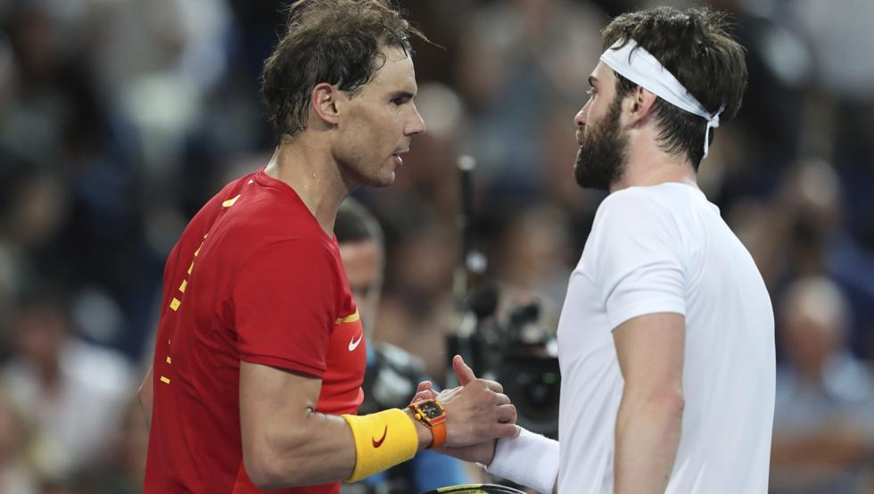

El tenis, es un deporte de raqueta practicado sobre una pista rectangular (compuesta por distintas superficies las cuales pueden ser cemento, tierra, o césped), delimitada por líneas y dividida por una red. Se disputa entre dos jugadores (individuales) o entre dos parejas (dobles). El objetivo del juego es lanzar una pelota golpeándola con la raqueta de modo que rebote en la otra cancha pasando la red dentro de los límites permitidos del campo del rival, procurando que este no pueda devolverla para conseguir un segundo rebote en el suelo y por ende un punto.
